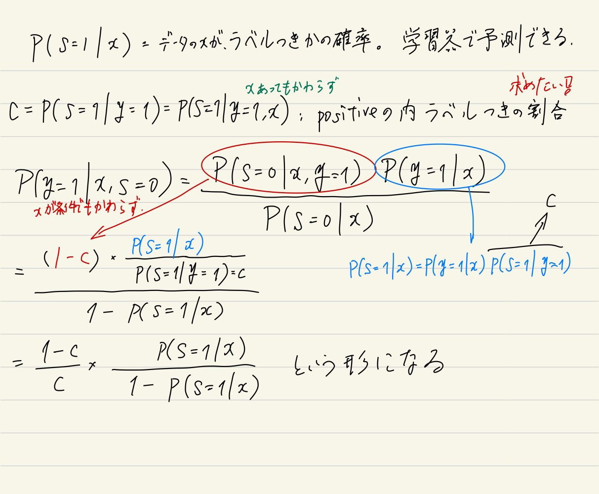

参考にしたサイトたち
https://mamo3gr.hatenablog.com/entry/2020/11/29/123147
https://speakerdeck.com/hellorusk/pu-positive-unlabeled-learning?slide=3
何なの？ #
ラベルはいっぱいあるけどつけるの間に合わん。普通はPositiveとNegativeにつけられたデータで行うが、PU LearningはPositiveとUnknownで区分したデータで学習させる。
生成モデルに基づく半教師付きの手法と違って、分布を仮定する必要はない。
手法 #
仮定、説明 #
サンプル$x \in \mathbb{R}$について、
- 正答$y \in 0, 1$があり、1ならPositive、0ならNegativeである。
- ラベル$s \in 0, 1$があり、1ならラベルあり、0ならラベルなし
そして、未知だが$(x, y, s)$に対する不変の分布があるとする。
仮定として、Positiveなものしかラベル付けされてない、しかも一部。つまりNegativeはUnknownである。$p(s = 1| x, y = 0) = 0$
もう1つ仮定として、ラベル付けされるPositiveは、Positiveの全体からランダムに選ばれると仮定する。$p(s = 1 | x, y = 1) = p(s = 1 | y = 1) = 一定値c$。$x$に関係なく、取るという意味。
理論的なおはなし #
条件付確率の分解をやる。「xであるときにy=1」$p(y = 1 | x)$と「xであって、y=1であるときにs=1」$p(s = | x, y = 1)$の積。依存関係はあるが関係はない。
$$ p(s = 1 | x) = p((y = 1 \And s = 1) | x) = p(y = 1 | x) p (s = 1 | x, y = 1) = p(y = 1 | x) \cdot c $$
つまり、
$$ p(y = 1 | x) = \frac{p(s = 1 | x)}{c} $$
つまり、データに対してPositiveである確率は、
- $p(s = 1 | x)$ データ$x$に対して、それがラベル付きかどうか。これは通常の分類器で推定できるので問題なし。
- 全部のデータと実際のラベル付きデータはあるんで、その分布を仮定する手法ならなんでも。深層学習でもいい。
- $c = p(s = 1 | y = 1)$ Positiveなラベルなら、印がつく確率。
がわかる or 推定できるなら、一番欲しい$p(y = 1 | x)$推定できる。
定数$c$の推定方法 #
というわけで、$c = p(s = 1 | y = 1)$を推定することができれば、勝ちです。
手法1 #
前述のとおり、$p(s = 1 | x)$「データ$x$に対して、それがラベル付きかどうか」。これは学習器で学習できる。その学習器に入れた時の結果を$g(x)$と置く。
$c = p(s = 1 | y = 1)$Positiveなラベルなら、印がつく確率。
ここで、訓練データと同じように抽出したテストデータ集合$V$を考える。その中で、ラベルの付いてる集合を$P$とする。
$$ c = \frac{1}{n} \sum \limits_{x \in P} g(x) $$
つまり、$V$のなかで実際にラベル付きのデータに対して、分類器でラベル付き=1か否か=0を**、$|P|=n$で割った平均。$|V|$ではない！。これは実際にラベル付きのデータに対してどれぐらい正確に予測できてるか、ということを示す。
そして、分類器が正しく訓練データについて$p(s = 1 | x)$を学習できてるなら、これはテストデータ(そしては訓練データ以外の全体のデータ)に対して、真のPositiveのデータのうち、ラベル付けされてるサンプルの割合になる。
つまり、ちゃんと訓練データに対して学習をさせたから(もちろんその訓練データの中でまた訓練とテストに分けるけど)、同じ分布(未知だけど)に従ってPositiveのものにラベルがつくと仮定してる以上、すでにラベルついてるデータに対して予測器でラベルつく割合を見つけられれば、それは全体のPositiveの者に対して、ラベル付きであるの割合だとなる。
実際はだいたいそうならない。ちゃんと同じ分布に従うかな？でもこの手法はそれなりに正しいんですよこれ。
手法2 #
先ほどは、$p(y = 1 | x) = \frac{p(s = 1 | x)}{c}$で$p(y = 1 | x)$を求めた。
今度は、まず$p(s = 1 | x)$を学習してみる。次に
- ラベル付きはそのまま。
- ラベルなしは、ラベルあり=重み$w(x)$とラベルなし=重み$1 - w(x)$という2つの点に複製する。そして、もう一度、$p(s = 1 | x)$を重みつきで学習する。
なお、重みは、$w(x) = p(y = 1 | x, s = 0)$とする。

こんな風に、一度方法1から予測した$c$から計算できる。
そして、これらの重みをそれぞれつけなおしたものから、もう一度$p(s = 1 | x)$を学習させるのだ。
実際の学習のフェーズ #
実際、識別器はSVMのソフトマージンで実装される。だが、SVMのソフトマージンでの定式化での損失関数はヒンジ損失$z$を用いると、
$$ \frac{1}{2} || \mathbf{w} || + C_p \sum _{i \in P} z_i + C_U \sum _{j \in U} z_j $$
この$C_P, C_U$は経験則で決めるしかないらしい。この手法をこの論文がbiased-SVMと提案している。
- $C_U = 0.01, 0.03, 0.05, \cdots, 0.61$
- $\frac{C_P}{C_U} = 10, 20, \cdots, 200$
- $C_P$に大きく重みを寄せる。
評価 #
手法2の方が実験的に精度が良い。
どっちも、(論文は2だけ離散の分類器は無理らしいけど、全部離散は無理では？？？)分類器が離散だとNGらしい。
また、理論的に正しく境界を決めるには、誤差関数をnon-convex loss(SVMのhinge lossはNG)にしないとならないという難点がある。